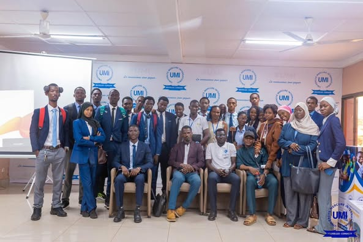
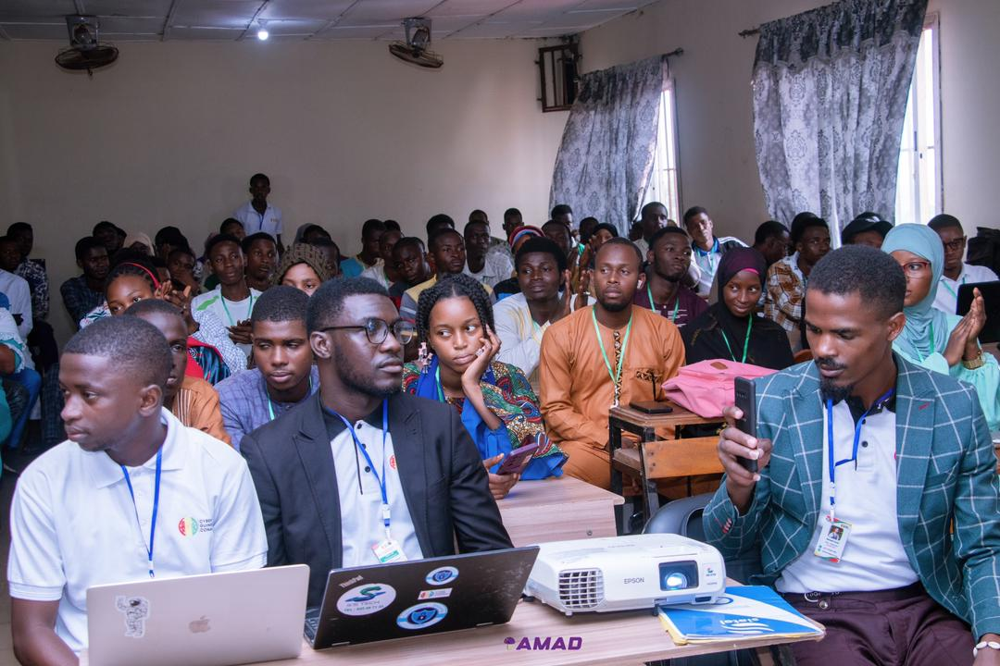

Mes Projets
Audit de Sécurité Web
Analyse complète des vulnérabilités des applications web pour renforcer leur sécurité.
Formation en Cybersécurité
Une plateforme interactive pour sensibiliser les utilisateurs aux menaces en ligne.
Système de Détection
Développement d’un système pour surveiller et protéger les réseaux en temps réel.
Developement d'une plateforme digitale d'Etat Guinéen
Développement d’une base de donnée nationale pour le recensement de la population des citoyens.
Developement d'une plateforme digitale d'Etat Guinéen
Développement d’une base de donnée nationale pour le recensement de la population des citoyens.
Developement d'une plateforme digitale d'Etat Guinéen
Développement d’une base de donnée nationale pour le recensement de la population des citoyens.